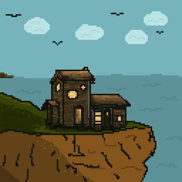
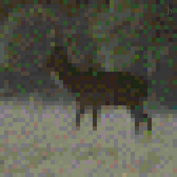
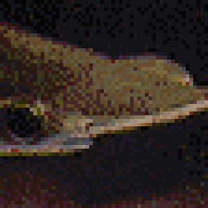
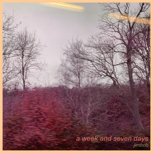
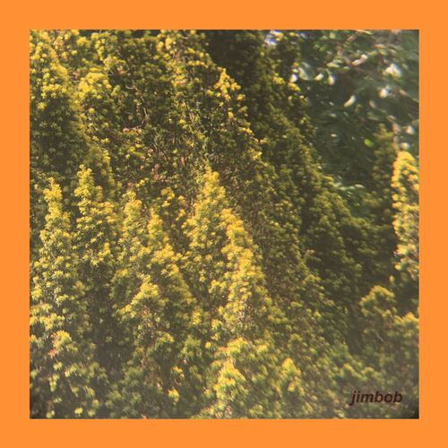
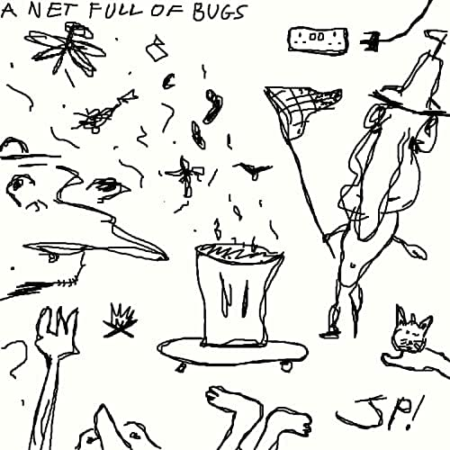
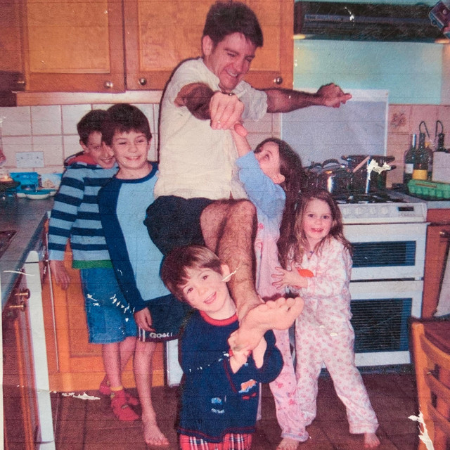

My first (and most successful) musical project - started 4 years ago. Heavily inspired by C418 and Aphex
Twinn.
Discography

Songs for Adventure
2021, 8 songs, 27 mins
This album draws inspiration from the renowned Old School RuneScape soundtrack, regarded as one of the greatest video game soundtracks ever created. By employing the distinctive soundfonts, I aimed to capture the charm of Ian Taylor's music. This project let me explore various techniques, including marching drums, circus-like melodies, and bossonova chord progresions.

i saw you in the mist
2020, 2 songs, 7 mins
Track 1 sets a brooding and dark undertone, accompanied by eerie footsteps. The second track, a slowed-down rendition of my very first recording from my 16-year-old days, hits on the nostalgic feeling. Featuring drums borrowed from my broken Casio keyboard and chords played on first guitar, I'm considering releasing the original song as a James Pilcher track at its regular speed.

Chalkstreams
2020, 13 songs, 40 mins
The British Isles are home to the majority of the world's chalkstreams. The title track of this album showcases a recording captured from a camcorder near my local chalkstream - even my sniff is caught toward the end. Building upon the lessons learned from LCBTL, this album presents a refined and polished sound, incorporating darker and more intricate chord sequences.

A Week and Seven Days
2019, 1 songs, 3 mins
This track can be viewed as a bonus addition to LCBTL, given its creation during a similar timeframe. With a distinct use of electronic piano sounds, the song comprises a complete A and B section. Its composition evokes a sense of graceful chaos, as if the music is teetering on the edge before the first melody emerges, eliciting a strong emotional resonance.

Let's Camp by the Lake
2019, 11 songs, 41 mins
This release narrates the tale of a two-day camping excursion, indicated by the song titles. The music has a soothing simplicity while weaving in some intrigue, making it equally enjoyable for both active and passive listening experiences. Much like camping, theres a focus on nature throughout the album, with a strong use of foley to place the music. This album, while being my first, is the essence of my (jimbob's) music.
Music Videos
James Pilcher
Would you look at that... that's my name. Indie-folky sound, inspired by early Jack Stauber and also Jack
Johnson, Mac DeMarco, and Alex G.
Discography

A Net Full of Bugs
2021, 11 songs, 25 mins
This album showcases a unique indie-folk sound, characterized by intriguing vocals and occasionally enchanting lyrics. Highlights are 'Claudia', 'One Day You'll Feel Great' and 'Mr Apeman - Bonus' which was made 1 year before the albums release! In my upcoming album, I plan to further explore this style while refining my lyrics to be more focused and clearer in their message.

Dustmites
2020, 5 songs, 14 mins
I wrote this album after experiencing my first proper heart break! I know, poor 17 year old me. The album offers very raw, emotional yet surreal lyrics - similar in style to Jeff Mangum from Neutral Milk Hotel. 'you make me pee all the time' is a highlight on the EP. It's about first date nerves and the honeymoon period of a relationship. I've since taking this off streaming platforms, as my singing wasn't great in places and it isn't the direction I want the rest of my music to go in. Its still available on youtube as a time-capsule.